相似内容不等于完全相同
模糊去重结合 MinHash 与连通分量内的配对启发式，针对改写、近似复制等重复。最新 store 的代码说明有 16 个来源豁免模糊去重，所以不能写成“所有来源经过相同去重”。
把一场大规模 MoE 训练拆成可以逐步理解的问题：模型吃了什么，参数如何工作，算力怎样组织，实验如何影响决策，以及最终的数字究竟证明了什么。
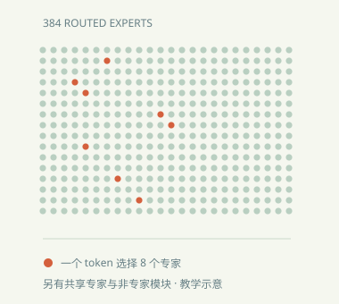
CAPACITY ≠ COMPUTE PER TOKEN
每点代表一个路由专家，橙色8点表示同一token的一次教学选择。行列只是排版，不对应GPU位置，也不是专家的重要性排名。
启动公告介绍了这场训练背后的三项积累：Delphi 的规模实验用于选择与预测，DataKit 负责预训练数据的整理与混合，Iris 调度计算资源并支持恢复。535B 启动前，团队还把训练栈从 Google TPU/GCP 迁移到了 NVIDIA GPU/CoreWeave。后文会把这些基础设施放回各自解决的问题中，而不是只看模型参数表。阅读启动公告与项目背景 ↗
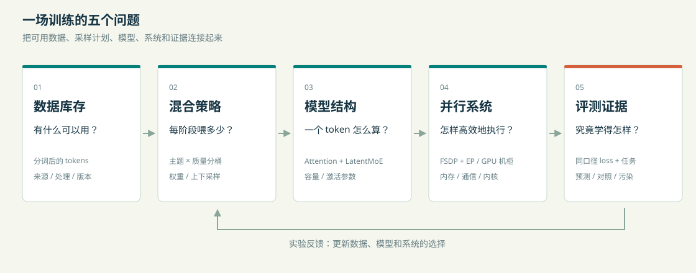
这张图在回答：理解一场训练从材料选择到结果验证的关系。看见‘数据多’‘参数大’‘算力强’时，先确定这些数字属于哪个环节，才知道它们能回答什么。
假设你看到‘535B、A23B、18T’：535B 应放进模型容量框，A23B 描述每个 token 的激活规模，18T 是沿配方累计的训练曝光量。它们都不能直接填进最后的‘能力得分’框。要回答模型是否更会写代码，还需看相应代码任务评测，而不是把三项规模数字相加。
比较时留意：这是一张概念关系图，没有实验观测点，也没有按成本绘制的面积。它帮助组织问题，不能用箭头方向证明因果，更不能据此估算某个模块的性能收益。
读图时先说清它在测什么，再看数字。下文每幅图都按「图意 → 坐标与图例 → 阅读步骤 → 实际例子 → 结论」展开。重要的不是记住小数点，而是知道该用它回答哪个问题。
模型会给候选token分配概率；给真实答案的概率越低，受到的loss惩罚越大。例如真实答案概率从10%变到50%，单个位置的负对数损失从约2.303降到0.693。它测的是预测质量，不是“答错了百分之多少”。应在同一份未用于训练的文本、同样上下文下比较。
所以1.982既不是98.2%的准确率，也不是每句错1.982次。先确认测试条件，再看下降方向与各子集是否一致。
tokens/s回答“每秒推进多少文本”；MFU回答“模型计算用了硬件理论算力的多少”。更高MFU常提示空等或低效计算减少，但长上下文会增加每token的运算，所以MFU上升时，tokens/s未必同比上升。
想估算同一训练预算何时完成，要看相同设置下的吞吐和中断情况；想找系统优化空间，再联合看MFU、通信与内存。
某类数据有很多，只说明可选材料丰富；它在训练中经常出现，才说明配方为它分配了更多曝光。配置采样权重6%可以理解成长期希望约6%的采样份额给它，实际消费量还需运行日志核对。
同一主题从1.3%到6.0%的变化，主要是在问“训练者把注意力转向了哪里”，不能直接推成对应任务能力提高了多少。
总参数像整个专家库，active参数像处理这枚token时实际叫来的团队。drop则表示某些本该参与的专家分配因容量约束没被执行；低drop保留了更多计划路径，但为此增大缓冲或容量可能让计算变慢。
这组指标帮助理解容量与效率取舍，不会单独给出模型能力排名。路由是否分散、路径是否保留、最终loss怎样，要联起来看。
把来源库存、清洗后的 store 和训练消耗拆开，才看得懂 25.6T、23.1T 与 18T 为什么同时成立。
训练数据像一座图书馆，采样配方决定每一阶段从哪些书架取书。Hugging Face 的 token-counts 是来源清单；Harrier store 是经过进一步处理、重新分桶的训练存储；18T 则是 Hero 基础训练的目标 token 预算。同一本“书”可以被多次采样，某个来源也可能只读一部分。
这张图在回答：这张图把所选 Hugging Face 来源快照按六个 category 汇总，回答哪类文本的分词后库存最大。它是来源目录的结构图，先帮助你建立数据规模感，再进入后面的训练采样配方；两种图的分母不同。
库存份额：一种内容在可用来源库里有多充足。 先判断数据供给，再问训练者怎样选择，避免把“仓库里多”误读为“训练时重视”。 更高表示库存更多，不代表更有价值或模型更擅长。 实际关注度要看阶段采样权重。
网页类有 14.466T tokens，占 56.4758%，图上四舍五入为 56.48%；代码为 5.935T、23.17%。这说明网页库存约为代码的 2.44 倍，而不是说训练每一批都按这两个比例读取。探查表中的 Stack v3 单项约 3.363T，也不等于整个代码类别。 对训练者而言，大库存提供选择空间，是否真的花预算学习它仍由采样配方决定。
比较时留意：CSV 记录数不保证数据源之间完全无重叠，也不是独立文档数。部分来源计数有估算说明；分类较粗，无法从这六行读出科学、法律或 Agent 的实际份额，更不能由库存推出模型能力。
这张图在回答：这张图换了一个问题：不按网页或代码分，而按来源记录是否标记机器翻译、是否标记合成来组织同一座库存。它与 D1 是交叉维度，一份代码数据也可以同时属于合成内容，不能把两张图的份额相加。
来源属性份额：库存中有多少文本被标为模型合成或机器翻译。 帮助理解文字的生成背景和潜在风格，不能直接当作质量评分。 比例升高表示该类来源更常见，本身没有好坏方向。 字段依赖来源标记，未标记不证明纯人工。
未标记部分为 17.645T、68.8874%；合成显示部分为 5.638T、22.0124%；机器翻译为 2.331T、9.1002%，三者合计百分之百。PDF 另占 16.9842%，图上显示 16.98%，把它再加进前三项就会重复计算。 这描述可供选择的文字背景，不表示这些来源贡献了相同比例的训练能力。
比较时留意：未标记仅表示这两个布尔字段为假，不能证明全部由人类原创；一个源条目内部也可能有多种文本。图中没有质量评分、验证成功率或训练效果，不能将某个来源标签直接解释为好或坏。
读表时还要留意“行数”和“规模”的差别。许多 specialized 记录是很小的 Agent 轨迹集合，记录多不代表 token 占比高；代码中的 Stack v3 则是单项大来源。FineTranslations 拆成原始多语言与翻译英语两行，两者不是两次重复登记同一段文本。部分计数也有估算成分，例如 Nemotron Code v1 的备注说明利用 v2 的每文档 token 数估算。
一个容易漏掉的细节是：Hero 原讨论写“292 个来源”，而它链接的冻结 CSV 已有 293 条记录，原因正是 FineTranslations 被拆成两个领域条目。本页同时打包这份冻结版和后来的许可证补全版；两版的 token 总量及分类统计相同，切换主要用于追溯来源说明。记录数不能直接拿来证明训练中新增加了一套语料。
token 也是分词器定义的单位，不等同于汉字、英语单词或文件大小。跨项目比较“多少 T 数据”时，至少要同时确认分词器、清洗前后阶段、是否包含重复采样。这里保留来源的完整计数，图上再用 T、B 缩写，避免四舍五入之后的数字被误认为精确处理日志。
可筛选并展开处理说明。表内比例始终相对于完整快照，筛选后不会重新归一化。各源许可证单列记录，目录仓库的 Apache-2.0 标记不能代替语料各自的条款。
| 来源 / 处理备注 | 领域 | tokens | 库存份额 | 属性 |
|---|
从来源名称转向“主题 × 质量”的 200 个单元，数据工程才成为能搜索、能检验的训练决策。
原始数据处理讨论 ↗ · Hero Issue 原界面 ↗ · 重复文档配对浏览器 ↗
这张图在回答：这是一张流程示意图，解释来源目录如何变成可按配方读取的训练 store。它把去重、去污染、主题标注、质量打标和采样连接起来，让你看清来源规模与训练食谱之间还隔着哪些决策。
清洗删除量：有多少文本被规则排除，以减少重复放大和评测内容重叠。 重复可能让某些内容获得过多更新机会，污染可能让评测看起来比真正泛化更好。 删除更多不是自动更好，也可能损失有用内容。 需结合删除样例与豁免规则判断。
原讨论用约 25.6T 来源池、移除 2.494T、保留 23.106T 来报告流程结果。图中的这些约数属于该讨论口径；不能拿来源表的精确 25.614855T 反推每一步删除量。固定 store JSON 的二百格可用量合计为 23,106,103,007,622 tokens。
比较时留意：这是关系图，不能读出各环节耗时、每来源删除率或唯一信息量。代码说明有十六个来源豁免模糊去重，不能说所有来源统一处理；原讨论中间聚类数量有叙述不一致，本图只采用可核对的最终四十乘五结构。
模糊去重结合 MinHash 与连通分量内的配对启发式，针对改写、近似复制等重复。最新 store 的代码说明有 16 个来源豁免模糊去重，所以不能写成“所有来源经过相同去重”。
n-gram 检查面向常见 lm-eval 基准及 Artificial Analysis Intelligence Index，目的是减少训练文本与评测内容重叠。它缓解已知污染风险，并不能证明所有评测都零污染。
Harrier 嵌入用于语义归类；质量标签由 GLM 5.2 生成并蒸馏到较快分类器。Q4 表示分类器评分最高的一档，不是人工认证的绝对真值，也不等同于某个学科。
来源表还能展示更具体的“数据变成训练文本”的过程：PDF 需要提取文字，书籍可能按页合并；GitHub 仓库需要序列化文件、加入自然语言头部；终端轨迹需要保留任务结果和对话结构。比如 Dolma4PDFs 的备注明确排除重复 FinePDFs，AgentTrove 去掉非开放权重教师生成的行。这些是来源级处理，不能外推成所有数据都采取同一模板。
为什么还要重新分桶？一个来源常常同时包含代码、新闻和科学讨论，而同一主题又可能散落于许多来源。按主题与质量组织后，搜索器可以调节“更重视哪类文本”，不必把整套来源一起升权或降权。相应的代价是标签带有分类误差：查看聚类样本文档，比只看一个漂亮的主题名称更能判断这个桶究竟装了什么。
从固定的 200 cell 权重重绘全部图表；每一个百分比都能追到配置，而非从截图估读。
初始 Harrier 较偏软件、科学、历史和数学；主阶段明显提高命令行 Agent 轨迹、法律与新闻；收尾进一步提高自然科学研究与最高质量桶。它体现了训练中的重新配方，而不是“训练开始前选一次数据，就一直读到结束”。
这张图在回答：这条时间轴告诉你 Hero 的三套数据配方分别在什么时候生效。它为后面可以切换的主题图和热力图提供运行背景，避免把三套权重误看成同一时刻并行混合的三份数据。
阶段步数占比：一套数据偏好在训练过程中持续多长的更新区间。 同一套配方持续越久，就有更多机会影响模型学到的模式。 更长表示作用区间更长，不表示效果必然更强。 不是实际天数，也不能单独决定数据消耗。
初始区间到 108,000 步，占总步数约 27.6745%；主阶段延续到 312,192 步，单独包含 204,192 步，约占 52.3232%；收尾剩余 78,059 步，约占 20.0023%。绿色区间最长，意味着主阶段的内容偏好会持续最多训练更新，而不是每步读取更多数据。
比较时留意：这是配置边界图，不是逐步遥测或完成进度，也没有展示上下文扩展与学习率曲线。代码里的 15T 加 3.75T 是参考配方预算，不能由此声称 Hero 实际训练了 18.75T；切换还会对齐 mixture block。
浅色：store 库存份额；蓝色：配置采样权重。右侧：权重 / 相对库存倍率。
这张图在回答：这张图把数据供给与配方选择并排放在同一主题上：仓库里有多少，与当前阶段准备分配多少采样概率。它帮助你识别某类内容是因为库存本来很大而常见，还是被训练者额外强调。
相对库存倍率：训练者给这类内容的预算关注度，相对“按库存随便读”放大或缩小了多少。 区分供给丰富与主动强化。 大于一表示额外重视，小于一表示主动降权。 不是阅读遍数，也不是能力提升倍数。
自然科学研究的 store 份额约 5.3927%。initial 给它 8.7883%，倍率约 1.63；main 为 6.8502%、1.27 倍；cooldown 为 11.2834%、2.09 倍。库存份额未变，改变的是阶段偏好；收尾的蓝条相对本行浅条约长一倍多。 它说明收尾主动给科学文本更多更新机会，而非突然扩充了科学库存。
比较时留意：此图只显示前十二且纵向排序会变，不适合靠行位置追踪主题。配置权重不是实测消耗，主题标签只概括聚类主要内容；跨阶段像素比较会受到动态比例尺影响。
命令行 Agent 轨迹约 1.3% → 6.0% → 6.6%；自然科学研究约 8.8% → 6.9% → 11.3%。这些是主题变化。Q4 的提高则是质量轴变化，两者应分开观察。
这张图在回答：这张百分比堆叠条形图把主题维度暂时合并，只看三套配方各自把采样概率分给了哪些质量评分桶。它回答训练侧重怎样沿质量轴变化，不回答某阶段总共训练多少 tokens。
质量桶权重：训练者给“被分类器评为某档”的文本分配多少更新机会。 体现配方对评分与多样性的取舍。 Q4 份额增大表示更强调高评分文本，不能直接说模型更好。 质量分数是模型判断，不是客观真理。
Q4 依次为 22.6333%、22.8516%、27.9683%，因此收尾相对主阶段提高约 5.12 个百分点。Q3 则约为 34.52%、32.68%、31.51%，三阶段都仍是最大的一档；收尾并没有把所有概率集中到 Q4。 这代表配方更相信高评分文本的作用，同时保留其他档位提供的内容覆盖。
比较时留意：各行归一化后相同总长隐藏了阶段时长差异，不能据此推断三个阶段用了相同 token 数。分类器评分也不是真实性或训练价值的最终保证；圆整标签可能出现合计略偏离百分之百。
这张图在回答：这张图展开三套配方的二百个决策单元，说明训练者具体给哪些“主题与质量的组合”更多更新机会。主题图和质量图都是它的汇总；这里能查清一个主题变多究竟增加了哪些质量档。
权重与倍率：权重是整体预算份额，倍率是相对供给的偏好。 避免把小桶的高倍率误认成主力数据。 高权重更常被采样；高倍率更受额外强调。 都不等于实际遍数或训练收益。
c30q4 库存约 675.660B、占 store 约 2.9242%；权重从 initial 的 4.8031% 到 main 的 4.9011%，再到收尾 9.1166%，倍率约 3.118。科学高评分文本因此获得明显更多更新机会。反看 main 的 c13q0：倍率约 13.853，却只占 0.008138% 预算，显示约 13.9 倍或 0.01%；橙色饱和只说明相对供给大幅强化，不代表它占训练主体。
比较时留意：这里是配置而非实测消耗。估算遍数还需将各阶段 token 预算乘以权重后累加，再除以该格库存，并考虑取整、恢复与上下文变化。有限小数与非线性色阶适合找结构；严格计算应使用图旁 JSON，质量评分也不能视为客观真理。
例如某桶占仓库 1%，却获得 3% 的阶段权重，其相对库存倍率就是 3×。这说明它比“按库存比例随机读”更受重视，并不代表已读了三遍。估算平均重复次数还需要阶段训练 token 预算：各阶段“预算 × 权重”相加，再除以该桶库存。真实消耗还会受块取整、恢复训练及上下文阶段影响，不能仅凭这张配置表宣称精确 epoch。
配方的价值最终要靠受控实验衡量。小规模模型上搜索出更好的混合比例，再用较大的 scaling ladder 检验迁移，能够降低直接在 Hero 上试错的成本；但搜索集上的收益、等吞吐假设下的“算力等效提升”和真实墙钟提速是三种证据。阅读训练报告时，应把配置、测量、外推分别标清。
先选 initial，记下命令行 Agent 轨迹的份额；再切到 main，观察其五个质量桶怎样一起变化。然后选择“相对库存份额倍率”，找出一个库存不大却被明显强化的格子。最后切到 cooldown，对照自然科学研究与 Q4 的增长。这个练习将“更多科学数据”拆成可检验的问题：究竟是哪个主题、哪个评分档位、哪个阶段变多了？
还可以比较同一主题的库存与采样：库存条只描述候选数据有多少，采样条反映训练者愿意分配多少注意力。如果两条都很长，说明它既丰富又常被使用；库存很长而采样很短，则表明数据虽多，当前配方仍主动降低它的出场频率。模型的训练经验由这种选择塑造。
MODEL · 模型结构
Marin 535B 是一个 decoder-only、每层都使用 MoE 的语言模型。535.3B 是模型保存的总参数量，22.76B 是每个 token 的活跃参数量。前者提供专家容量，后者更接近逐 token 的计算规模；注意力、共享专家等始终参与，因此活跃比例不能直接用 8÷384 代替。
12d8b6f09f96ad4f0277445765c1a00dbc81d5be。训练中更换通信后端、调整部分门控与数据等属于后续演进，不能把某天的配置当成全程唯一 recipe。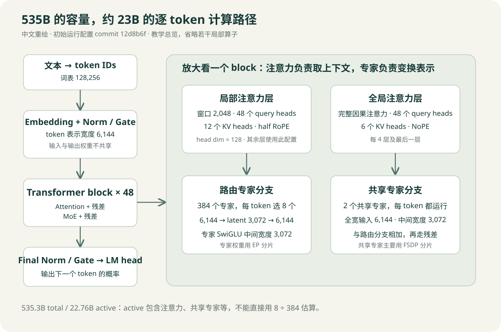
这张图在回答：这张中文结构图回答两个问题：文本怎样变成下一个 token 的预测，以及 535B 总容量为什么不要求每个 token 都访问全部参数。先沿左侧看完整网络，再看右侧放大的一个 block，避免把专家池当作整个模型。
跟着一个 token：它先成为 6,144 维向量，在局部层读窗口内上下文，再通过该层选中的 8 个路由专家和 2 个共享专家更新。到全局层时还能跨窗口取信息。它不需要轮流跑完 384 个专家，但要走完模型的 48 层。
比较时留意：这是初始固定提交的教学总览，省略部分门控、短卷积和残差细节。框大小不能比较显存、箭头长度不能比较延迟。结构本身也不证明模型能力，最终还要结合训练数据、预算和评测结果。
| 初始配置 | 数值 | 学习时如何理解 |
|---|---|---|
| 层数 / 表示宽度 | 48 / 6,144 | 每层反复执行取上下文、变换表示及残差更新。 |
| Query heads / head dim | 48 / 128 | 48×128=6,144；多个 head 提供不同的注意力子空间。 |
| KV heads · 局部 / 全局 | 12 / 6 | GQA 分别为 4:1 / 8:1；堆叠存储按最大 12 heads 对齐，不意味着全局层计算 12 heads。 |
| 注意力范围 | 2,048 局部窗口；每 4 层及末层全局 | 局部层降低长序列注意力成本，全局层保留远距离信息路径。 |
| 位置编码 | 局部 half-RoPE，θ=10,000；全局 NoPE | 局部层只旋转 head 维度的一半；全局层不施加 RoPE。 |
| 路由专家 / 每 token 选中 | 384 / 8 | 扩张可用专家池，同时限制每 token 访问的专家数。 |
| Latent / 专家 FFN 中间维度 | 3,072 / 3,072 | 前者决定路由支路和通信宽度，后者决定每个专家内部容量。 |
| 共享专家 | 2 个，SwiGLU，width 3,072 | 每 token 都运行；输入输出仍为全宽 6,144。 |
| 词表 / 初始序列长度 | 128,256 / 4,096 | 词表大小与 token 数量、上下文窗口是不同概念；输入输出 embedding 不绑定。 |
表中参数来自初始运行记录；后续长上下文扩展与实际训练阶段在时间线章节区分。查看原表及完整模型特性
GQA 的意义可以从“谁提问、谁提供可检索信息”来理解：48 个 query heads 提出不同问题，但多个 query 共用一组 K/V。局部层每 4 个 query heads 共用一组，全局层每 8 个共用一组。局部窗口进一步限制每个位置能读取的历史范围，而全局层仍能跨窗口取信息。这样，模型不必在每一层都承担完整长距离注意力的成本。
MoE 中的“专家”是一组可学习矩阵，不是预先标注好的数学、代码或语言模块。Router 从数据中学会分配，某个专家的用途需要另做分析才能确认。更多专家给模型更多可区分的变换，但并不自动保证质量更好：训练数据、优化器、路由平衡、每个专家实际见到多少 token，以及通信代价都必须一起考虑。
Router 先读取全宽表示，为专家打分。Quantile Balancing 用上一阶段估计的专家阈值修正选择偏置，让过忙的专家更难被选中；这一偏置采用 stop-gradient，不通过梯度学习。初始实现以全局直方图估计分位数。选出专家以后，合并权重取未加偏置分数的 sigmoid，并缩放到总和 2.5，并非普通 softmax 总和为 1。
真实模型是 top-8 / 384。这里保留“打分→选中→专家计算→加权合并”的过程，数值为教学设定。
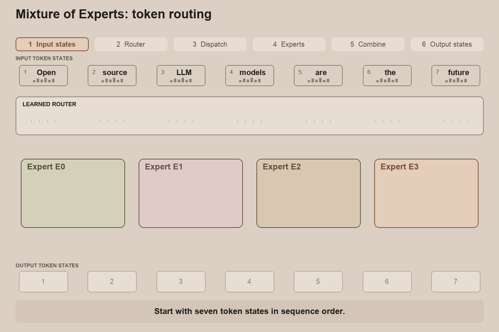
这张图在回答：原动画把 MoE 前向过程分成输入、router、dispatch、专家、combine、输出。它解释同一个 token 怎样获得多个专家的不同变换，以及结果怎样汇合；遇到“路由是不是把整个句子分给一个专家”的疑问，就应回到这张图。
只盯位置 1 的“Open”：记住编号，观察它被送到哪两个专家，再找两个返回贡献如何合并成输出槽 1。看懂一个 token 的双路路径后，再重播观察不同 token 为什么可能选不同专家。
比较时留意：此例 top-2/4，真实 Marin 为 top-8/384，另有 2 个共享专家。图不证明真实 tokenizer 恰按单词切分，也不显示专家语义专长、容量溢出、实际带宽和精确权重公式；这些需联读后面的 LatentMoE 与系统图。
路由支路把表示从 6,144 投影到 3,072，经过带可学习增益的 latent RMSNorm，再送给选中的专家；专家输出在 latent 空间合并，最后投影回全宽。Router 仍然读取 6,144 维原表示。这个降维减少的是每份激活向量的宽度，不会减少文本 token 数，也不会把 top-8 改成 top-4。
共享与路由支路的分工也有实际工程意义。共享专家给每个 token 一条稳定的通用变换路径；路由专家按输入选择额外变换。初始配置为两个半宽共享专家保留了较强的共享骨干，在固定容量阶段即使个别路由分配溢出，模型仍有信息更新路径。这是一项降低风险的设计，不构成“任意比例 dropping 都无害”的保证。
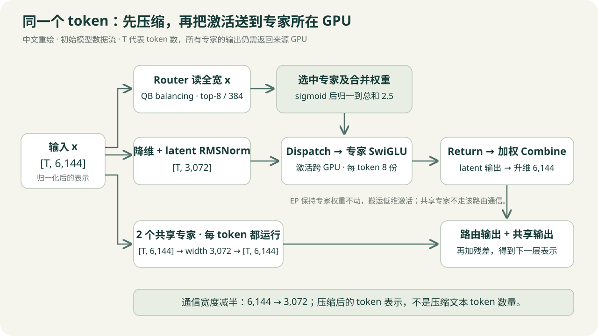
这张图在回答：这张中文数据流图拆开 router、latent 路由专家和共享专家三条路径。它说明为什么模型保留全宽路由决策，却能只搬运一半宽度的激活；需要判断“通信变少究竟少了什么”时，应沿方括号形状读图。
设 T=100，降维前后仍是 100 个 token；top-8 产生至多 800 份路由分配。每份去程和回程搬的是 3,072 维向量，并不是把文本压成 50 个 token；合并回原位置后才投影到 6,144。
比较时留意：这张初始配置简图没有 padding、expert ID、缓冲和网络布局。载荷减半不等于整个训练加速两倍，注意力、共享专家和优化器还有成本；也不能只看降维推断质量是否保持，需看实验双图。
初始模型还有 RMS qk-norm、XSA、attention head gate 和 GatedNorm。XSA 减去注意力输出在自身 value 方向的分量；head gate 给各 head 学习缩放；GatedNorm 在 RMSNorm 后施加低秩门控。它们都改变表示变换，不改变“384 选 8”的专家计数。
kernel=4 的因果 ShortConv 位于 K、注意力分支输出和 MoE 分支输出，按文档边界屏蔽。最终 logits 的 z-loss 权重为 1e-4，用来控制长期训练中的梯度增长；router z-loss 和 load-balance loss 在此初始配置中用于监控，不能误写成实际优化目标。
04 / TRAINING RECIPE
架构只规定模型怎样计算。训练 recipe 还要回答：每类参数怎样更新，学习率怎样随预算变化，以及怎样在放大前发现不稳定。
12d8b6f。实际训练经历了系统、数据、上下文和裁剪相关续训；“首发配置”不能代替全程变更记录。源码明确使用 线性学习率衰减，这里不把其他 Marin 实验的 µP 或 WSD 名称套到当前 hero。大矩阵主要由 MuonH 更新：先通过动量和 Newton–Schulz 迭代得到方向，再把更新后的矩阵投影回原来的 Frobenius 范数。可以把它理解为“改变权重的方向，同时控制整体尺度”。这是参数更新规则，与计算采用 BF16、梯度是否裁剪是不同层面的选择。
输出读出矩阵 lm_head 使用 AdamH：方向来自 Adam moments，但也做范数保持投影，使用 MuonH 组的学习率。embedding、router、attention gate、norm gain 和小型 ShortConv 参数使用普通 Adam。不能因为名称里都有 Adam，就认为它们使用同一学习率或约束。
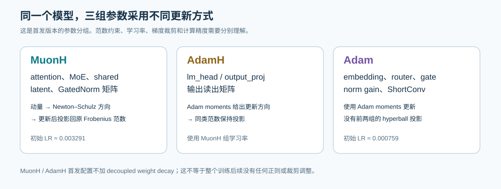
这张图在回答：这张图回答的不是模型怎样生成文字，而是看到一批训练文本后，怎样修改不同的权重。把模型想成许多可调旋钮：主矩阵、输出读出和小型参数的性质不同，所以训练没有对所有旋钮套用完全相同的更新规则。
例如 lm_head 位于中框，表示它使用 Adam 的方向和范数投影，并跟随约 0.003291 的那组峰值；router 在右框，峰值约 0.000759。这说明的是职责与规则，不是 lm_head 每次改变的数值必然比 router 大 4.33 倍，因为两者参数尺度、梯度和更新变换不同。
比较时留意：这是首发源码分组的解释图，不是训练日志，也不是各组收益的消融实验。它不能证明 MuonH 比 Adam 在当前大模型上贡献了多少能力。后期 lineage 有 router、正则和 gradclip 相关续训变化，所以也不能据此断言全程没有任何裁剪或正则调整。
| 设置 | 数值／规则 | 学习时应关注什么 |
|---|---|---|
| MuonH／AdamH 峰值 LR | 约 0.003291 | AdamH 的 readout 也使用这一组 LR |
| 普通 Adam 峰值 LR | 约 0.000759 | 两组峰值约相差 4.33 倍 |
| Adam β1／β2 | 0.90／0.95 | 不要与 Muon momentum 0.95 混淆 |
| MuonH | Nesterov；Newton–Schulz 5 步 | 正交化通信限制在机架内 |
| 学习率计划 | 1% warmup；linear decay；末端 5% peak | 这是初始计划，后续扩展另有配置 |
| logit z-loss | 权重 10−4 | 加入训练目标，抑制长 token horizon 下的梯度增长 |
| 全局梯度裁剪 | 初始无 | 后期出现 gradclip 续训阶段，不能写成“全程无裁剪” |
| 精度／存储 | BF16 计算；首发 FP32 pinned-host master＋optimizer offload | 计算精度、参数存储、通信精度要分别确认 |
这些学习率并非只在最大的模型上碰运气。源码用 token 总预算、hidden width、每步 token 数拟合 heuristic，分别推导 LR、β2 和 epsilon，再迁移到大规模。它是一套有实验范围的经验规则，不是对任意模型都成立的定律。另须区分两种 z-loss：最终 logits 的 z-loss 真正加入训练目标；router z-loss 在首发说明中仅用于监控。
放大梯子还有一个用途：建立正常训练动态的参照。例如梯度范数先增长再随学习率衰减，不一定意味着数值正在失控；更值得调查的是它持续偏离小规模趋势。团队的检查项包括梯度变化速率、受约束参数的范数是否保持、router bias 与熵、embedding 范数增长、token dropping 和实际学习率。只看总 loss，可能错过某个参数组已经停止学习，或者某项监控统计只是在记录、并未加入目标的问题。
同样，某项架构在小规模消融里有效，不代表它在所有尺寸都保持相同收益。LatentMoE 的设计动机同时涉及通信字节和表示尺度；其 latent RMSNorm 尤其不能从说明中省略。最终 hero 采用了组合方案，但没有逐项移除所有组件的大模型对照，因此网页将“采用了什么”“为什么采用”“实测证明了多少”分开叙述。
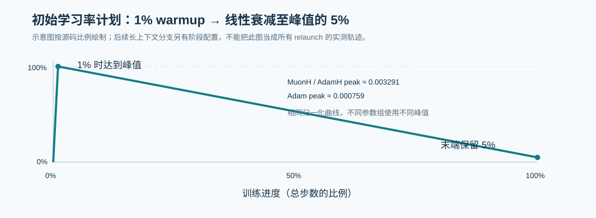
这张图在回答：学习率控制更新规则的步幅。这里展示首发计划：开始逐步放大步幅，让模型进入训练状态；随后随着训练推进逐步收小步幅。图解的是预先设定的规则，不是模型能力或 loss 随时间的曲线。
把滑块拖到 50%：曲线约为峰值的 53.0%，不是 50%；MuonH／AdamH 约为 0.001744，普通 Adam 约为 0.000402。拖到 100% 后仍保留 5% peak，对应约 0.00016455 和 0.00003795。这表达的是训练末期用更小步幅继续调整，而不是末期学习效果只剩 5%。
比较时留意：图中没有实测误差条，也没有比较不同学习率方案的实验组；所以不能用它证明此计划最优。它只覆盖首发规则，后续扩 context 和延长训练有各自阶段配置，不能把这条示意线当成所有 relaunch 的实际 LR 日志。
归一化学习率约 53.0% peak；MuonH／AdamH 约 0.001743，Adam 约 0.000402。
团队花约总预算的 1% 做放大梯子：保持相近 recipe 和约 791 tokens／active parameter 的训练比例，改变宽度、模型规模和机架数。它同时服务三个目的：预测最终 loss，检验梯度与 token dropping 的趋势，以及为大训练每 5% 的进度建立参照。小模型不能证明大模型一定成功，却能在昂贵运行前暴露错误。
| 宽度 | 激活参数 | 训练 tokens | 这条梯子提供的证据 |
|---|---|---|---|
| d768 | 61M | 48B | 完成 |
| d1024 | 162M | 128B | 完成 |
| d1536 | 481M | 381B | 完成 |
| d2048 | 约 1.2B | 目标 926B | 约 81% 因硬件失败，末端使用外推 |
| d6144 hero | 22.76B | 18T | 被预测的目标规模 |
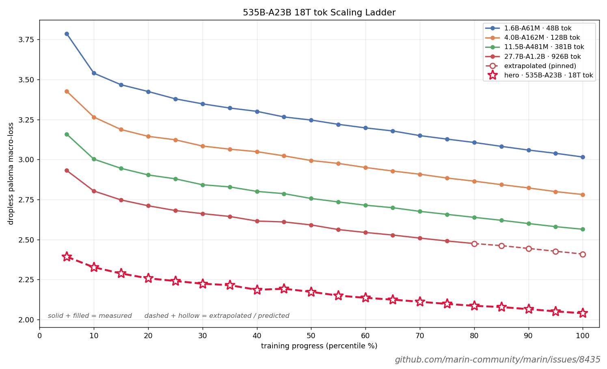
这张图在回答：这张单面板图把几个小模型的验证 loss 轨迹和对 hero 的事前预测放在一起。它回答：如果训练配方按既定比例放大，大模型在自己训练到各个阶段时，预计会把文本预测得多好？图里尚没有实际 hero 的验证曲线。
在 100% 位置，绿色 d1536 的实心圆约为 2.56，而 hero 空心星约为 2.039；前者是完成的小模型结果，后者是对更大计算预算的预测。把视线移到 50%，hero 星约为 2.18，可以将它作为 hero 进行到一半时的监控参照，但不能说两者差值就是某个新架构功能独立带来的收益。
比较时留意：预测依赖相同 4K 设置、数据混合和所选幂律形式，且 d2048 后段含估计。真实 hero 后来换过数据、系统和训练 context。图中没有预测区间，因此不能把星点视为零误差目标；也不能将宏平均 loss 的预测直接翻译为代码正确率或 agent 成功率。
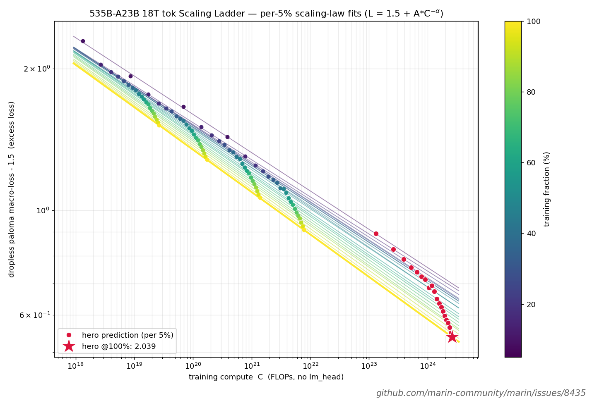
这张图在回答：这张图展开上一张 hero 星点背后的计算。每条彩线只对应一个固定训练完成比例，在那个比例上，把四个宽度的 loss 与各自已经消耗的计算量拟合，再延伸至 hero 在同一比例的预算。它是跨规模外推，不是一条模型从开训到结束的实测学习曲线。
从图右下红星读到 excess loss 约 0.539，加回 1.5 得到 2.039，再与另一张最终 4K 图的 1.982 比较，才是相同 loss 表达。若直接把 0.539 与 1.982 比，会误以为预测比实际好得多。再沿 10²⁰ 的竖网格看各彩线，它们代表不同训练阶段的拟合水平，不是同一模型在同一训练成本下同时出现的多条实际结果。
比较时留意：线性外观部分来自所选的幂律形式和固定下限，不能当成规律已经被无限范围验证。d2048 末段还使用外推与修正；图没有置信带，也未展示不同函数形式的模型不确定性。100% 黄色拟合与早期紫色拟合使用不同阶段信息，不能把后来才有的末端数据倒装成开训初期已经掌握的证据。
拟合形式是 L = 1.5 + A·C−α，其中 1.5 是选定的拟合下限，不是被证明的不可约熵。d2048 的末端先用 60%–80% 区间外推，并加 0.005 修正；因此一部分“最终点”本身仍含估计。首发的 2.039 预测还假定持续使用 4K 及同一数据混合；后来的真实运行改变了这些条件。
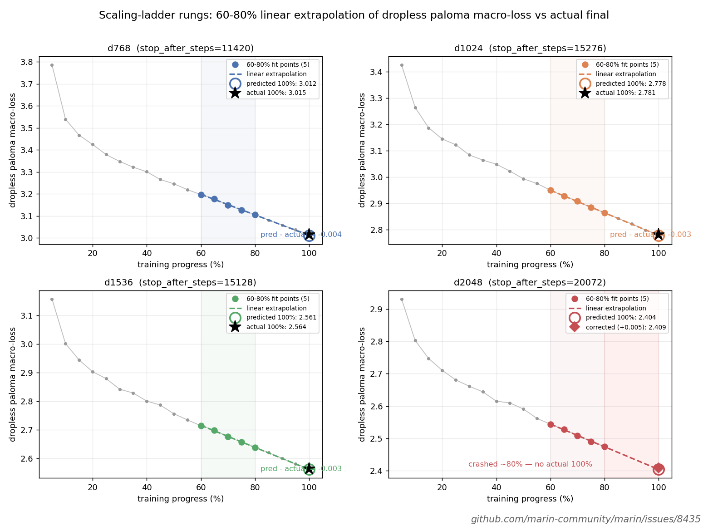
这张图在回答：这张图检验一个较近的时间外推：用每个小模型训练后半段的五个评估点，估计它自己的 100% 终点。它与双对数图的跨模型规模外推不同，是先问“这条小模型曲线剩下的 20% 能否估得合理”，再决定怎样处理未跑完的 d2048。
右上 d1024 图例给出预测约 2.778，实际约 2.781，意味着用后半段趋势对末端作出了稍偏乐观的猜测。右下 d2048 的 2.404 和 2.409 则都没有实测 100% 值可核对：后一个数只是人为加了 0.005 修正。它们不能像右上那样被描述为“预测和事实几乎一致”。
比较时留意：这是利用已到 80% 的信息预测最后 20%，不代表训练刚到 5% 时也有同样精度。只有三个完成模型的回测，不能提供普适误差保证；小模型时间外推成功，也不自动证明跨到数百倍计算量的 hero 外推一定成功。所有 loss 仍是特定评估设置上的文本预测指标。
SYSTEMS · 训练系统
MoE 把每 token 的计算限制在少数专家，但全部专家的权重仍要保存。Marin 因此把架构与并行一起设计：rack 内用 EP 分片路由专家，FSDP 处理其他大部分权重，rack 之间做数据并行。JAX/XLA 是软件栈，这次 hero run 的硬件是 NVIDIA GB200/B200 GPU。
NVL72 物理上有 72 个 GPU；运行按每 rack 保证健康的 16 节点×4 GPU，即 64 GPU 组织。rack 内 NVLink 峰值每 GPU 每方向 900 GB/s；跨 rack 的 InfiniBand 为 50 GB/s，差 18 倍。大规模专家通信因此尽量留在 rack 内，11 个 rack 复制模型、处理不同批次，并同步更新。带宽是峰值规格，不等于应用持续达到的吞吐。
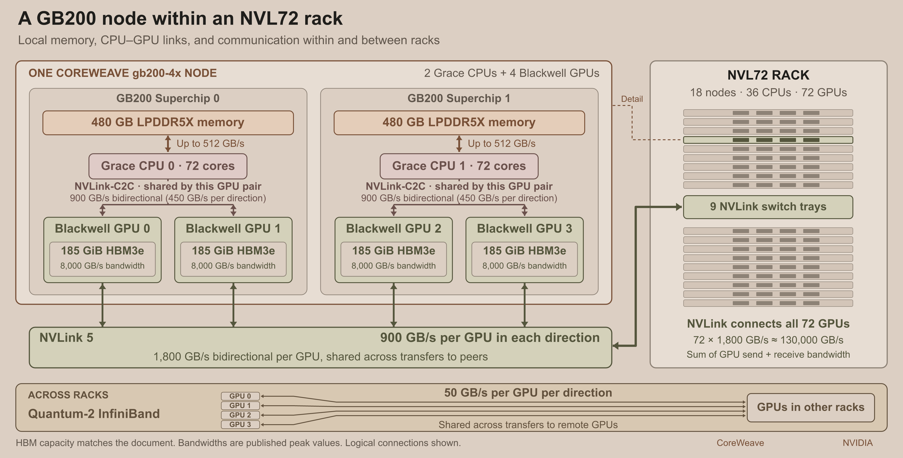
这张图在回答：硬件图解释为什么并行应贴合 NVLink 域：同卡读显存、同 rack GPU 互传、跨 rack 互传的速度和共享范围不同。选择分片边界时先问“数据要走哪条路”，再比较同口径带宽，不能把所有 GB/s 相加当成同一种资源。
若选中专家在同 rack 另一张 GPU，激活走 NVLink；若在另一 rack，就需走更慢的 InfiniBand。右侧 72×1,800≈130,000 GB/s 是所有 GPU 发送加接收能力之和，不是任意一对 GPU 之间有 130 TB/s。
比较时留意：箭头长短不表示延迟，线粗不按带宽比例绘制。峰值不保证实际 all-to-all 持续达到该速度，流量、拥堵和调度都影响结果；是否利用好硬件，要联读生产吞吐和 MFU，而不是只看规格。
普通数据并行在每张卡保存全模型，只拆分数据，解决不了模型状态太大的问题。FSDP 把参数、梯度和优化器状态分片；计算某层前聚合该层权重，每张卡处理自己的 token，反向后汇总梯度并返回对应分片。路由专家越多，这种临时聚合的权重越重。EP 则固定专家的归属，把选中专家的 token 表示派发过去，算完再送回来。
一个显存量级算例：若用 BF16 权重、BF16 梯度、FP32 主权重和两份 FP32 Adam 状态，每参数需要 16 bytes，535B 就接近 8 TiB，尚未加激活和缓冲。这是解释“为什么必须分片”的通用算账；Marin 的实际初始 recipe 混用不同优化器并使用 host offload，不能拿 8 TiB 当作其真实 GPU 常驻用量。即使总状态装得下，某一层聚合后的临时权重也可能使单卡溢出。
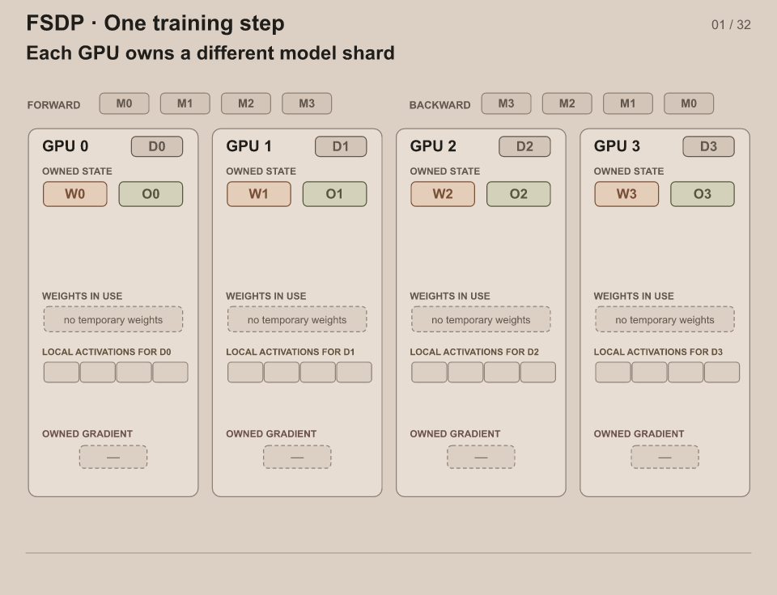
这张图在回答：FSDP 动画区分长期保存的模型分片与计算某层时临时聚合的权重。它解释为什么分片能省常驻显存，却仍要付通信代价。PNG 只是 01/32 的首帧，尚无临时副本，必须看视频才能理解过程。
只看 GPU1：它长期持有 W1/O1，但计算 M0 时也需要 W0 副本处理 D1，完成后可释放。反向中所有数据分片对 W1 的贡献汇总给 GPU1，它才能按全局梯度更新。拥有 W1 不等于只计算 M1。
比较时留意：四卡四块是教学模型，不是实际 64 卡配置；图没有按真实耗时和大小作画，也没完整展开预取、重叠、offload 和重计算。不能数空框估算显存，或按动画等待秒数估算实际通信延迟。
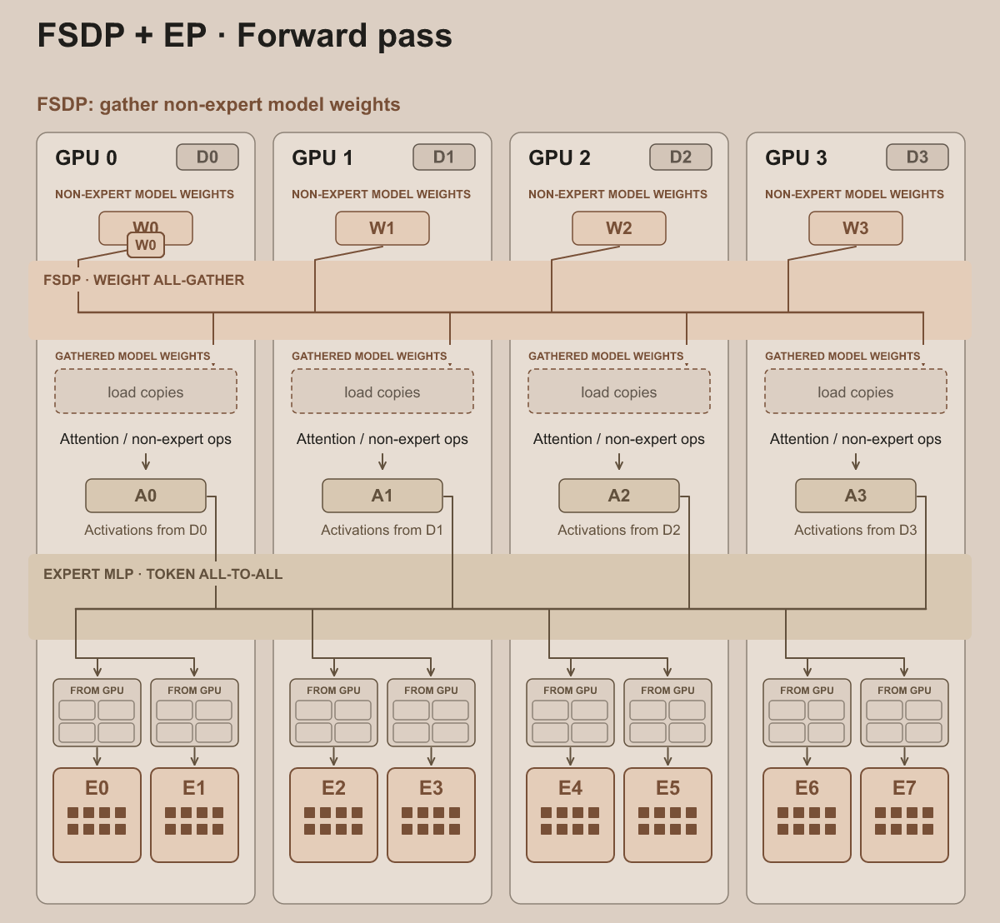
这张图在回答：FSDP+EP 图让人直接比较两种交换：上半部聚合非专家权重，下半部把 token 表示送到专家拥有者。理解这个区别，才能知道为什么专家容量增长不必让 EP 激活通信按专家总数同比增长。
跟踪 GPU0 的 A0：注意力阶段它留在 GPU0；若路由选中 GPU2 的 E4，该份表示就去 GPU2。E4 计算后将结果返回 GPU0，E4 权重不随结果回来。一个 token 选多个专家时，会存在多份这样的分配。
比较时留意：四 GPU、每卡两个专家是示意，实际 EP64 每卡六个。首帧没画完整回程，真实还有 latent 压缩、共享分支、反向和容量处理。通信是否更划算须联读计算器与实际 MFU，不能从箭头多少判断加速。
固定 64 GPU、序列长度 4,096、专家中间宽度 3,072、BF16。下方按远端比例 63/64 估算前向路由支路；不含共享专家、反向、padding 或 metadata。
T = batch × 4096 ÷ 64；FSDP ≈ 3 × E × L × 3072 × 2 × 63/64 bytes
EP ≈ 2 × T × K × L × 2 × 63/64 bytes
E 是专家数，K 是 top-k，L 是路由表示宽度。固定 K 时增加 E，EP token payload 不随 E 增长。
不同 token 选择不同专家，负载天然不均。初期 ragged all-to-all 在他们的 JAX/XLA 配置中存在效率、稳定性和通信重叠问题，于是改用固定容量 all-to-all。每个 sender 为每个目标 GPU 建一个池，目标的 6 个专家共享池中空位；接收端再按随激活携带的 expert ID 分组，交给规则 GEMM 计算。sender pool 与 receiver expert 分别设容量因子，超出的 assignment 会被丢弃。
容量因子以“完全平衡时应收到多少份分配”为基准乘上余量。初始运行表中 sender 与 receiver 均为 1.15；博客短测采用 sender=1.05、receiver=1.33。这两组数服务不同运行，不能拼接成一个参数组合。3 waves 是把连续分配轮流放进三个波次，按波次复用缓冲，并不意味着专家数或 batch 缩小到三分之一；XLA 可在调度中重叠部分计算与通信。
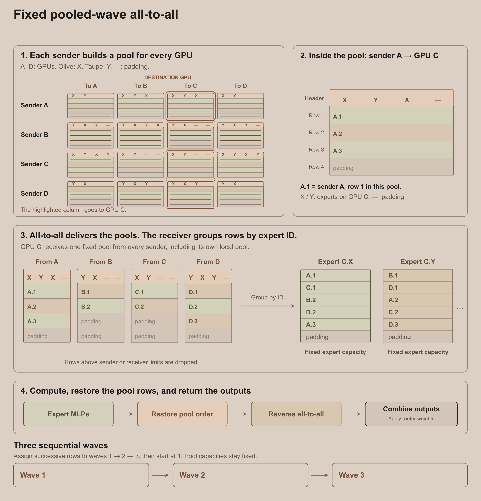
这张图在回答：协议图回答“专家负载不规则，怎样仍用固定形状通信”。关键是先按目标 GPU 共享传输池，到接收端再按本地 expert ID 分组。它还解释为什么要把 sender drop 与 receiver drop 分开看：两者代表不同位置的容量不足。
Sender drop 与 receiver drop：它们不是两类文本错误，而是同一份专家分配可能在不同容量关口被拒绝。 调优时先定位关口：只增接收端容量，可能完全不能解决发送池已满的问题；反之也一样。 更低通常保留更多预期专家贡献，但需要与吞吐和峰值内存一起权衡。 少量分配被丢弃对质量的影响还取决于其他存活专家、共享路径和训练适应，不能只按比例线性估计能力损失。
跟着 A.2：它在 A→C 池第二行，header 是 Y，所以到 C 后进 C.Y，不是进第二张GPU。Y 产生结果后恢复到池第二行，再返回 A，按该分配的 router 权重加入原 token。若 sender 池已满，它不会发出；若 sender 容纳它而 Y 专家输入区已满，则可能在接收阶段被丢弃。原 token、其他专家贡献和共享路径仍在。
比较时留意：四GPU、两专家、四行池都是演示，真实为 EP64、每卡六个路由专家。框面积不代表实际字节或容量因子，不能按图中空位比例估计生产 drop。协议本身不证明 drops 对质量无害；是否值得接受，要看实验双图与生产速度的联合证据。
原先 FSDP-only 的候选是 360B-A23B。EP 加 LatentMoE 使 535B-A23B 可训练，总容量增加约 49%，但有少量分配丢弃。团队用四档小模型比较决策：在不丢分配的评测设置下，较大的 EP 模型各档 loss 都更低；根据 loss scaling 估计，等吞吐条件下相当于 18–35% 的计算收益。这是小规模实验和假设下的外推，不是 hero 模型已实测的端到端加速倍数。
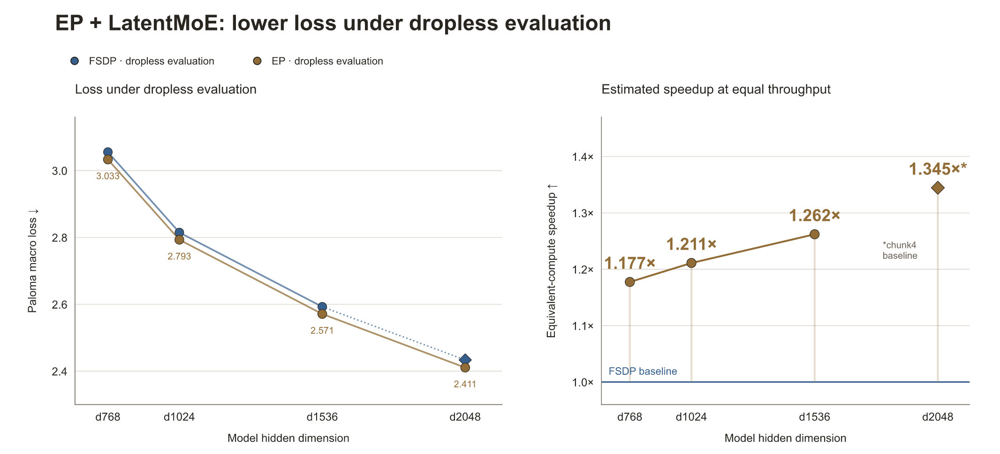
这张图在回答：双图支持“更大 EP+LatentMoE 模型是否值得接受训练 dropping”的决策。左边观察预测 loss，右边把 loss 差异按 scaling 关系换算为等效计算收益。后者是带假设的推算，不能直接当作通信 kernel 的实测速率。
同一准确率，也可能有不同 loss：Loss 还关心模型对真实 token 给了多大概率：对错误答案极其自信的预测，会比不确定的预测付出更大代价。 比较预训练配方时，它比只数预测是否命中更细致，适合观察小幅学习效率差异；但跨数据集的 loss 不能脱离文本难度直接比能力。 同评测集、同口径下越低越好。 1.262×表示基线比 EP 约多需26.2%计算；反过来 EP 相对该基线计算约少20.8%。分母不同，不能把“多需百分比”和“省下百分比”直接互换。
取d1536：棕点2.571，蓝点略高，说明EP方案dropless评测loss更低；右点1.262×表示作者估计FSDP要约1.262倍计算才到该loss，不是loss降低26.2%，也不是每秒token提高26.2%。判断训练方案时，先看左边是否有质量差，再用右边评估计算预算意义。
比较时留意：该ladder早于最终535B架构及pooled-wave实现，不能保证hero规模也有同倍率收益。正文报告EP训练约5.5–7.1% drops，最大FSDP基线也有2.69% drops，使收益上界更不确定。图不提供完整训练预算、吞吐和置信度；loss也不能代替全部下游能力评测。
单 rack 的短测在最后 50 steps 得到约 256k tokens/s、24% median MFU、2.4% drops；正式训练固定容量阶段约 21.5% MFU、3.4–3.5% drops，两者的测试时长与配置不同。约 step 82k 改用修复后的 ragged all-to-all 后，drops 接近零，MFU 约 23%。此后还有多个优化阶段，吞吐曲线上的全部增长不能归因于一次通信后端替换。
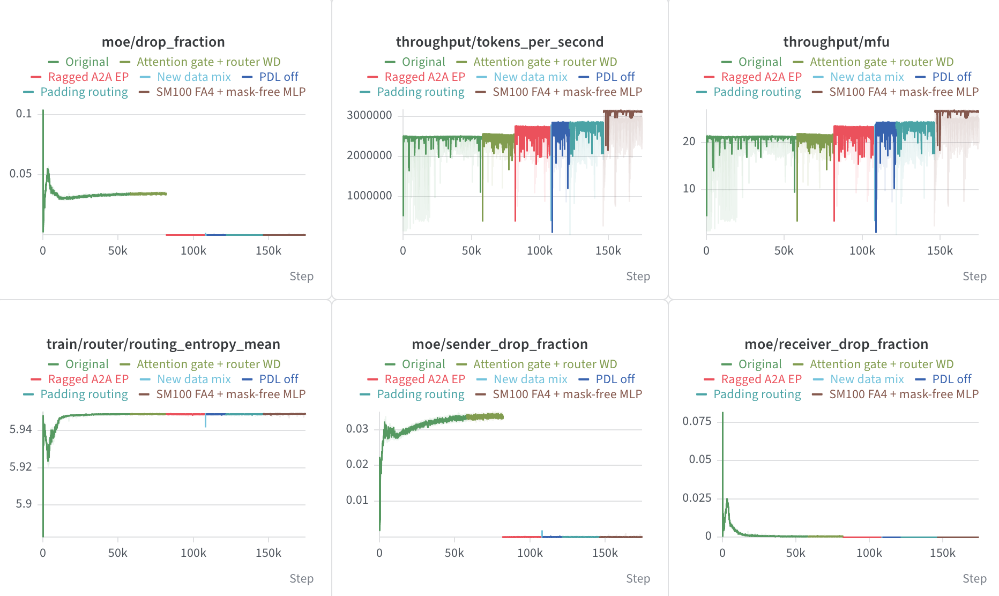
这张图在回答：这组生产图记录顺序续训阶段，核心问题是“少丢专家贡献的同时，是否还训得够快，路由状态是否异常”。先取相同step上下对照；颜色不是七个同时训练的独立模型，单个指标改善也不能自动证明质量变好。
把指标变成调试问题：高 drop 问“预定专家路径在哪里没走完”；低吞吐问“单位时间处理了多少训练数据”；低 MFU 问“硬件峰值是否有效转化为模型计算”。 如果 drop 降而吞吐也降，需检查容量余量是否太大；若吞吐与 MFU 同升而熵基本不变，更像系统效率改善的证据。 这些都要与 loss 和评测联读，没有一个单独等价于更好的模型。 熵高可以来自更分散的路由，也可能缺少有用专门化；图中只有平均值，无法确认每层、每专家和每发送池的分布。
对照约6万与9万步：前者总drop约3.3%，几乎都来自sender，吞吐约250万；后者drop近零，吞吐约270万且MFU更高。联读支持“新后端少丢且更快”，但要判断质量还得去看loss与评测，不能由MFU或熵代替。
比较时留意：精确事件以记录为准：WD为58,014，ragged为81,716，datamix为108,000，PDL off为108,778，SM100/MLP为146,139；padding routing精确起点不能仅从图读出。截图只覆盖前段，不表示最终效率；近零drop也非永不溢出保证。没有质量评测、故障原因或平滑定义，无法由线色建立严格因果。
还要为显存留出专家通信缓冲、激活和临时工作区。初始 recipe 使用 host offload 保存 FP32 主权重与优化器状态，并对 block 做重计算；它们用更多传输或重复计算换 HBM。MFU 也必须按 LatentMoE 的实际计算量修正，不能把压缩前的大模型 FLOPs 直接当作分子。MFU 衡量模型运算相对硬件峰值的利用程度，不能单独充当训练质量或模型能力的评分。
阅读监控时先确认单位和范围：token/s 是单卡、单 rack 还是全作业；drop fraction 的分母是输入 token 还是 token–expert assignments；MFU 的峰值精度与模型 FLOPs 口径是否一致。路由熵高、平均负载均衡，也不能排除某个 sender 到某个目标的局部池拥堵。正因如此，团队分别记录 sender drop 和 receiver drop，才能判断瓶颈发生在传输池还是专家容量。
05 / THE ACTUAL RUN
主预训练完成了 390,251 次更新。它是一条从 checkpoint 继续的训练 lineage；多个 W&B 名称记录不同阶段，并不代表独立重训了十一个模型。
机架型号为 GB200 NVL72，但源码的 EP64 使用 16 nodes×4 GPU，因此训练卡数按 11×64 计算。专家并行留在架内，跨架复制模型做数据并行。初始 global batch 为 11,264 条 4K 序列；扩 context 时缩小序列条数，保持每步 token 总量，避免把“batch 条数变小”误认为每步数据量同幅减少。
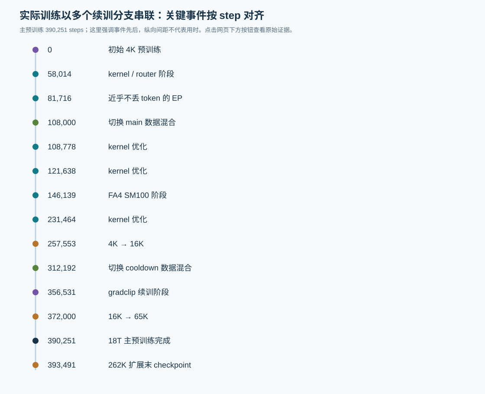
这张图在回答：这是一份事件目录，用来把曲线上的变化与当时采取的动作对应起来。它提醒读者，18T 主预训练不是从头到尾锁死所有设置的一次实验，而是从 checkpoint 接续、保留训练状态并记录变更的一条 lineage。
108,000 对应 main mix 切换，除以主训练的 390,251，约为进度 27.7%。372,000 对应 65K 续训，离主训练结束只剩约 18,251 步。两者在这张图中都只占一行，不能据此说两段持续同样久；而在训练 loss 图里，应分别去约 5.0T 与 17.2T 附近寻找变化。
比较时留意：图不提供性能归因和统计显著性，也不完整展示每次故障或每个配置字段。相同 step 之前后的指标变化可能来自数据、计算口径和多项系统变更，不能仅按事件排列把收益分配给每个模块。
535.3B / 22.76B active；pooled-wave EP；初始 Harrier 混合。
打开本事件的原始证据 ↗首发 pooled-wave EP 在固定容量下可能丢弃 expert assignments，后来迁移为近乎不丢 token 的 ragged all-to-all。两个数据切换点分别为 108,000 和 312,192；正式 16K、65K 续训从 257,553 和 372,000 开始。356,531 的 lineage 名称含 gradclip，因此初始“无裁剪”不能用作全程结论；公开汇总在这里不足以确定裁剪阈值。
大模型 checkpoint 本身达到数 TB，写得越频繁，故障损失越小，但保存开销越高。首发 launcher 采用每小时临时恢复点，hero 每六千步保留永久 checkpoint，并在重试时寻找最近可用状态。恢复的不只有权重，还包括 optimizer moments、step、router 的状态和数据读取位置；只加载权重继续跑，不能视为同一次训练的等价延续。
数据混合切换也必须尊重恢复语义。相关实现保留切换前的权重 schedule，以正确计算恢复后的读取偏移；增加 context 后还要处理不同长度对应的 shuffle 窗口。这里的学习重点是：训练中的“同一个 token 预算”同时受到采样、去重、重复读取与恢复策略影响，配置上的混合百分比不能代替精确消费日志。
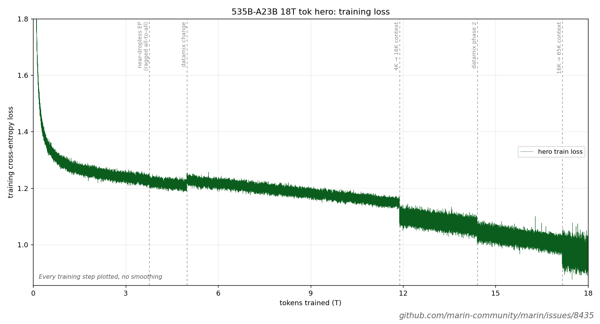
这张图在回答：这张图展示模型实际训练时，对抽到的文本预测得有多好。它最适合观察学习是否持续推进、是否出现突变和不稳定；它没有固定一份外部考试题，因此不能单凭下降就断定泛化能力按同样幅度提升。
在约 5T，绿线有小幅上台阶，同时标注 datamix change；它不能直接说明模型突然退步，可能是新混合更难预测。约 11.9T 扩 context 后反而明显下台阶，也不能立即算成同幅能力跃升，因为模型可利用的前文和文本 packing 都变了。末端约 0.965 的平均训练 CE 说明对最后一段采样文本更不意外，不等于验证 macro 也应为 0.965。
比较时留意：图没有独立测试集、置信带或同条件干预对照。不能将两段不同混合的 loss 差值直接归因于 kernel、路由或某个架构特性，也不能凭尖峰位置定位硬件故障。纵轴裁切会放大小台阶的视觉效果，判断幅度应读刻度。
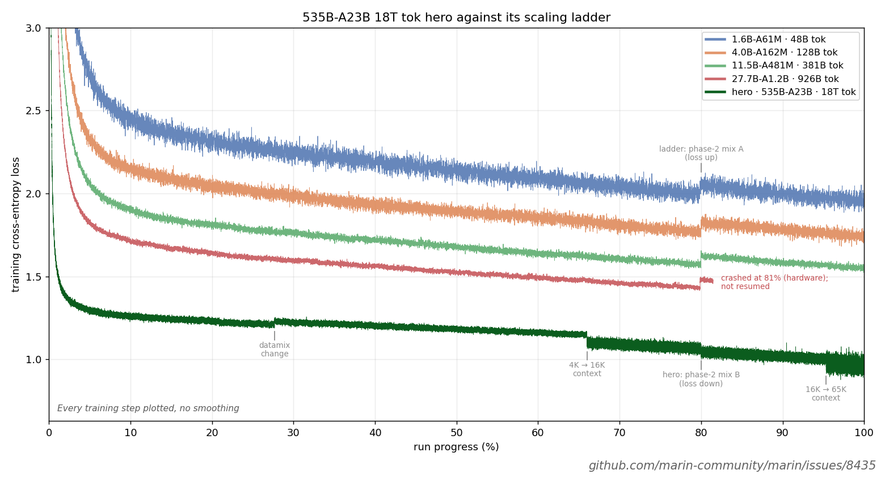
这张图在回答：这张图把 hero 与四个小模型的训练动态对齐，帮助观察规模扩大后，学习曲线形状是否类似，以及换混合后发生什么。这里比较的是模型在各自训练流上有多容易预测后续，不是一个预算完全相同的模型竞赛。
在约 50% 进度，hero 深绿线约为 1.18，浅绿 d1536 约为 1.67；可以说较大模型在各自当时的训练流上更不意外，但 hero 为到达这一步用了远多于小梯子的计算。再比较 80% 左右，蓝线从约 2.0 略升而深绿下降，这正好提示 training loss 对采样混合敏感，需要固定验证集才能判断哪种混合带来更好泛化。
比较时留意：图不能证明增加参数的收益在相同预算下仍成立，也不能衡量各组件单独贡献。不同后期混合和 context 使曲线缺少严格的同条件可比性；要检验外推，应看固定 4K 验证图，而不是把本图的训练 CE 当作验证 macro。
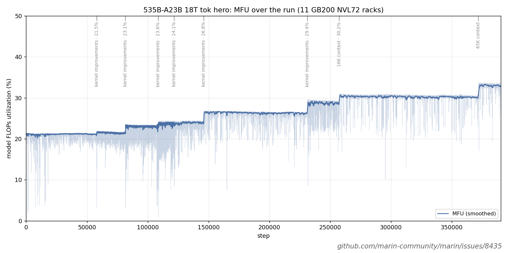
这张图在回答：这张图观察系统把硬件理论计算能力转化为模型训练计算的效率。它能说明运行效率随优化发生变化，但不是模型质量曲线，也不是“有多少 GPU 正在工作”的计数，更不能仅凭它推算训练完 18T tokens 的时间。
约 180K step 的平台在 26% 左右，约 250K 在 29% 左右，可以说同为 4K 阶段的模型计算效率提高。257K 左右切到 16K 后平台约 30%，后期 65K 阶段约 33%；后两者除了实现变化，每 token attention 计算也更大，因此不能直接说 33÷21 代表 tokens/s 快了约 57%。
比较时留意：单图无法定位每个尖刺是通信、调度、故障还是记录问题，也不能独立归因每项 kernel 的收益。曲线不提供实测成本、能耗或训练质量；高 MFU 的更长 context 仍可能需要更长时间才能处理相同数量 tokens。
07 / EVALUATION & EVIDENCE
最重要的比较是同一评估口径下，实际结果相对事前预测怎样变化；较小的 loss 本身不等于更强的所有下游能力。
Paloma与Uncheatable是两组评测文本集合，不是两种模型。Macro loss先分别计算每个子集的平均预测损失，再让各子集等权参与总平均；它问的是“跨这些领域平均有多意外”，并非“全部token加在一起的总错误率”。一个很小的子集也可能与很大的子集有同样权重。
BPB（bits per byte）把预测所需的信息量按原始字节归一，而不是按分词器的token归一，适合辅助观察文本预测效率；较低通常较好，但文本、上下文和统计集合仍要一致。不要把0.605与1.982直接比大小，它们使用不同单位。下面最清楚的一组比较是同为4K的预测2.039与末期重评1.982：模型比原预测更容易预测这份评测文本；这仍不等于代码或对话任务准确率提高某个百分比。
| 测量设置 | Paloma macro loss 跨领域的平均预测意外程度 ↓ | Paloma BPB 按字节归一的信息量 ↓ | Uncheatable macro loss 另一组文本集合，同类指标 ↓ | Uncheatable BPB 另一组文本的bits/byte ↓ |
|---|---|---|---|---|
| 4K 复评，step 390,000 | 1.982 | 0.605 | 1.503 | 0.474 |
| 65K 线上末次，step 390,250 | 1.960 | 0.585 | 1.478 | 0.465 |
| 原始梯子预测，4K | 2.039 | — | — | — |
4K 复评约比 4K 预测低 0.057，但真实训练已更换数据并在更长 context 下继续。65K 的 1.960 又来自另一种评估设置和稍后的 checkpoint，不能直接拿它与 2.039 算“同设置提升”。曾有近乎同权重的对照显示，仅把 packing 从 4K 改到 16K 就让 Paloma macro 低约 0.03；这正是必须记录评估长度的原因。
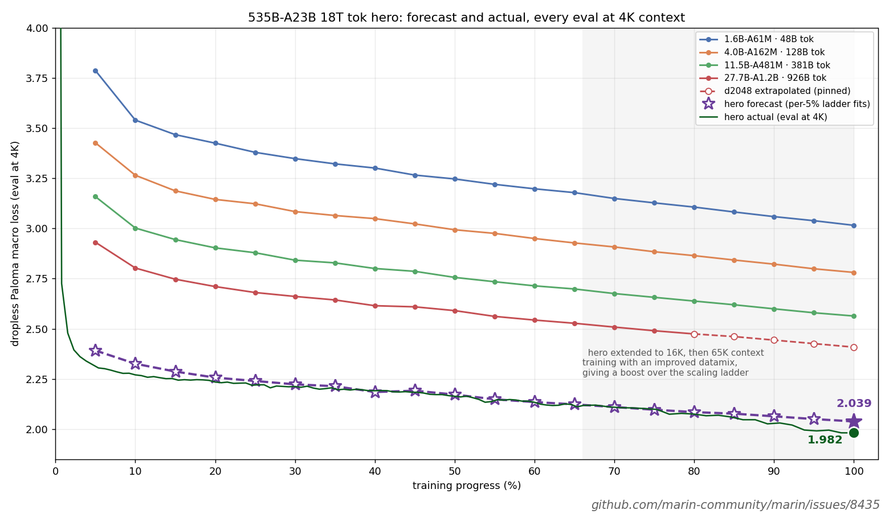
这张图在回答：这是整组训练图里最直接的外推检查：把小梯子作出的 hero 预测，与真实 hero 在同为 4K 评估设置下的结果比较。它检验的是特定文本预测指标的轨迹，而不是宣称模型达到了某个闭源系统的综合能力。
在最右侧，紫星为 2.039，深绿圆为 1.982，差约 0.057 个 macro loss 单位，意思是实际在这套验证文本上比原预测更不意外。它不是准确率提高 5.7 个百分点。正文另列的 65K 线上末次 1.960 没有画在这张 4K 比较图里，不能拿那个更小的数替换绿圆来扩大“战胜预测”的幅度。
比较时留意：数据混合、训练 context 和系统均有改变，另有 PTB 污染，所以不能把 0.057 全归因于某个架构或训练方法。小于预测的 loss 不等于通用能力全面领先，单张平均曲线也可能掩盖某些子集的退步。
结束总结明确披露：Paloma 的 PTB 评估全文在训练约 209K 和 362K steps 时被读入，均对应 PTB loss 明显下降。即使数据管线做了去污染，也不等于已经证明所有评估都干净。这是报告必须保留的反例，不能只展示改善最显眼的曲线。
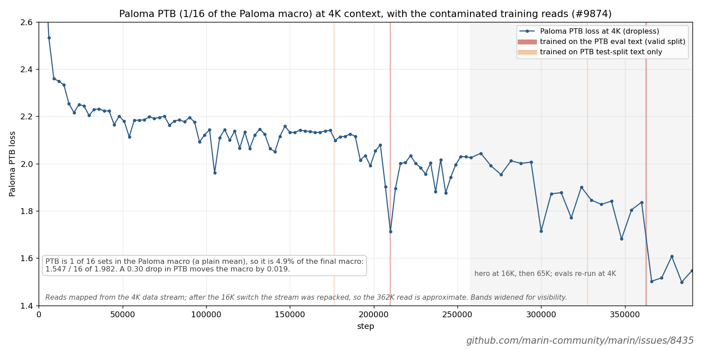
这张图在回答：这张图把一个验证子集的 loss，与训练实际读入相关文本的时间对齐。它展示为什么低 loss 必须结合数据来源判断：模型若在训练中见过评估文本，可能因记住内容而更不意外，但这不等于它对从未见过的文本也获得相同进步。
209K 附近红带对应的蓝点明显落到约 1.71，周围较早点接近 2.0；362K 后又出现约 1.5 的低点。图中最终 PTB 约 1.547；它在 16 子集均值中贡献 1.547÷16≈0.0967，占最终 macro 1.982 的约 4.9%。这里子集权重仍是 1/16，即 6.25%；4.9% 是最终 loss 数值的贡献份额，不能混为同一个比例。
比较时留意：这不是有无污染的随机对照实验，无法精确算出最终 macro 应扣掉多少污染收益，也不能反推所有其他子集一定干净。蓝线邻点波动较大、读取位置部分近似，不能把色带宽度当成精确污染持续时间，或声称每一个低点都由记忆造成。
模型对实际采样训练文本的下一 token 预测误差。末 1,000 steps 平均约 0.965，不能与验证 macro 直接相减。
Loss 受 tokenizer 和上下文影响；BPB 按字节归一。Macro 是对子集取平均，并非把所有 token 混成一个平均。
代码正确率、推理、指令遵循和 agent 任务需要各自 benchmark。预训练 loss 改善不能替代这些实测，更不能直接代表 post-training 效果。
还要分清 dropless eval 与训练时的 dropping：前者尽量测模型本身的预测质量，后者可能受专家容量和传输限制影响。若比较不同阶段，至少对齐 checkpoint、context、tokenizer、数据集版本、dropless 设置与聚合方式，然后再讨论模型变化。
可以按三步检查任何“提升”结论：先写明比较对象，再列出两者间改变的变量，最后寻找相匹配的对照。比如，数据切换后 training CE 突降，只能先说明新抽到的文本更容易被当前模型预测；要证明质量更好，需要固定验证集。MFU 上升也要配合 tokens/s 和每 token FLOPs，才知道它对完成同一 token 预算的时间意味着什么。
对平均值也要保留耐心。一个总体 macro 可以掩盖某个子集退步，而许多独立任务的小幅改善也可能比一个污染集合的大幅改善更可信。这里提供原始图与讨论链接，是为了让读者能够回到子集、测量设置和更正记录，沿着证据检查结论，而不只记住最后一行数字。
主训练结束后，11 个末期 checkpoint 等权平均，在 65K、dropless、qk_mult=1.66 的设置下，23 个评估集合均改善约 0.003。报告中的 Clean Paloma 排除了 PTB、WikiText-103、TwitterAAE 和 Gab，仅含其余 12 个集合，不能把它的 1.75 左右 loss 与上表 16 子集的 1.96 当成同一指标。约“等价多 7% compute”来自 scaling law 换算，也不是实际多训练了 7%。
训练结束不是所有实验的结束。把主预训练、上下文扩展、SFT 和导出分开，才能解释后续 checkpoint 和评测数字的含义。
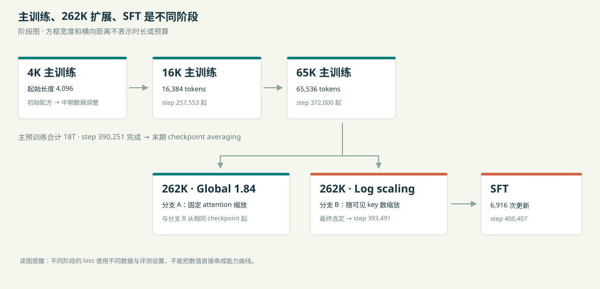
这张图在回答：说明18T主训练之后，262K扩展与SFT怎样从已有权重继续；同时防止把不同阶段的loss、步数和训练目标混成同一场比较。
两个262K分支都从step 390,251到393,491，各增加3,240次更新，因此不能把393,491当成这次扩展又跑了39万多步。SFT再从393,491继续到400,407，差值为6,916次更新。这里的262K是输入长度，3,240与6,916是更新次数，18T是主训练累计tokens：三个单位描述不同事情。
比较时留意：阶段图本身不显示各阶段墙钟时间、实际消费tokens或下游任务成绩。下面的262K比较表使用Clean macro和MRCR等特定评测，它们的样本范围与主训练Paloma macro不同，数值不能直接相减。
上下文长度是一次前向计算可以共同处理的 token 数，并不等于训练总量。主训练从 4,096 扩到 16,384，再到 65,536；保持每次更新的 token 数时，序列数量会相应减少。更长输入也改变 attention 的计算量、激活内存以及评测中每个 token 可利用的前文，所以长度切换必须同时标在系统指标与评测曲线上。
262,144 长度的扩展还涉及 attention query 的缩放。项目比较了固定 global 缩放和随可见 key 数增长的 log 缩放，最终选择后者。它们的 clean macro 几乎相同；MRCR 的全文 NLL 有差异，但证据移除对照表明，后期收益并不全是检索能力改善。查看原始实验结论 ↗
Clean macro问“在所选的19个干净或较稳定的评测子集上，整体文本预测怎样”，并非所有任务的综合准确率。MRCR full-context NLL只对长文档中指定回答的位置计算预测损失，问“给定整篇长文，模型有多容易预测这个回答”。Recovery则比较提供证据前后损失的改善量，问“证据放在大量干扰文本中时，保住了多少原本单独提供证据能带来的好处”。Recovery约0.98是在这个定义下保留约98%的证据收益，不是98%的题目答对。
因此，应分别看整体文本预测、指定回答预测和证据利用是否改善。原实验还比较移除证据后的NLL；若全文与无证据时都一起变好，就不能把NLL下降全部归功于更强的检索。指标定义与对照方法 ↗
| 262K 两种配方的最终比较 | Log floor 65536² | Global 1.84 | 怎么解释 |
|---|---|---|---|
| Clean macro loss | 1.6434 | 1.6433 | 差异不显著；不要据此排序整体能力 |
| MRCR full-context NLL | 0.0223 | 0.0252 | 较低更好；原实验报告差异显著 |
| Recovery | 0.982 | 0.981 | 差异不显著 |
| 训练随机性覆盖 | 1 个 seed | 1 个 seed | 置信区间主要覆盖文档采样，不覆盖训练随机性 |
SFT 使用指令与回答形式的数据，让预训练模型适应面向用户或工具的交互格式。项目记录显示，本次 SFT 完成了 6,916 次更新，最终 checkpoint 为 step-400407，训练于北京时间 2026-11-13 09:38 左右结束。训练 loss 的下降体现对这份 SFT 数据的拟合，并不能单独证明通用能力或对齐质量更好；还需要对应的任务、对话与工具使用评测。
大量文本的 next-token 训练，关注语言、知识和模式；配比、训练量和模型容量共同影响结果。
在已有权重上继续训练特定格式数据；训练目标和数据分布变了，应单独解释 loss、drop 与能力评测。
理解这场训练，要把算法、数据、系统和测量放在一起。下面是可以迁移到其他大模型项目的思考方式。
容量、数据和算力是设计变量；实验与评测决定我们能相信什么。
库存 tokens、目标采样比例、训练总 tokens 和实际消费量分别回答不同问题。看数据表时，先找版本、分词器、分类规则与计数方法。
MoE 增加容量，EP 改变通信对象，LatentMoE 减少激活宽度；效果需要与负载、padding、丢弃和内核效率一起评估。
规模实验用于选形状、配方与预测；真实运行中的修改则需要固定配置、对照与时间线，避免只凭一条 loss 曲线作结论。
保持上下文、数据集、drop 设置及聚合方式一致。对于发现污染的任务，单独分析其贡献；总体平均值无法替代完整评测。
微基准不等于整个训练的加速；单次实验不覆盖随机性；预训练 loss 不等于对话能力；支持长输入也不自动证明可靠的长程检索。
每个 token 只运行被选中的路由专家，加上共享和非专家模块。计算更接近 active 参数规模，但专家权重仍需存储，路由和通信也有额外成本。
训练按照配比采样，而不是机械地把每个数据集读完一次。较小但重要的数据可以被上采样；同一个数据源在不同阶段也可以获得不同权重。
不能仅凭这一变化下结论。即便权重接近不变，评测 token 能看到更多前文也可能降低 loss。应回到统一上下文的重评结果，并结合对照实验。
不是。这里主要指 token 与某个被选专家之间的 assignment 因容量不足被丢弃。其他专家路径、共享专家及残差路径仍可能存在。
下列解释与每幅图的读图步骤配合使用。数值变化要回到具体测量设置，而不是只记“越高越好”或“越低越好”。
在next-token评测中，我们知道真实下一个token。模型给它的概率为p，单位置惩罚通常是−ln(p)；非常自信地猜错会受到较大惩罚。训练或评测图往往汇总许多位置的惩罚，所以较低意味着这些真实文本更符合模型的预测。它不直接测回答事实是否正确，也不是错误率。比较时先固定数据、上下文、tokenizer和聚合方式。
Macro先算各子集，再等权平均，回答“这些领域平均表现怎样”；全token平均则让规模较大的子集影响更大。BPB以原始字节为分母，用bits表示预测信息量，回答“每字节文本要付出多少预测信息成本”。子集集合变化会使macro跳变，即使模型权重没变；不同单位的数值不能相减或直接比较高低。
MFU是估算的模型FLOPs/s相对硬件理论峰值FLOPs/s的比例，帮助找计算、通信与调度效率。tokens/s直接统计每秒推进的文本量。上下文变长会让每token需要更多计算，可能出现MFU上升但tokens/s未同比提高的情况。比较训练完成时间时，还要把checkpoint、故障恢复和停机算进去。
FLOPs是运算量预算，不等于秒数或钱。等效计算收益则把某个更低的loss代入scaling拟合，估计基线要增加多少计算才能达到它。它依赖拟合范围、损失下限与吞吐假设，是一种便于比较算法的换算；只有匹配的实际运行，才能证明墙钟提速。拟合横轴排不排除lm_head也会改变预算口径。
Drop fraction计数的是专家分配缺失，低一些表示保住了更多计划计算路径；增大capacity可降低drop，却可能提高缓冲、通信与padding成本。路由熵看专家选择的分散程度，高一些表示总体上不那么集中，但不能证明专家学到了更好的语义分工，也不能排除某个发送池的局部拥堵。联合看loss、吞吐与sender/receiver drop才有决策价值。
采样权重描述某阶段的目标出场概率；除以库存份额得到的倍率描述相比按库存随机读，配方更偏爱还是更少读这一桶。倍率3×不等于已读三遍，因为还缺阶段总token预算。质量桶是分类器在此管线里的相对评分，较高不保证对每个任务都更有用；领域覆盖、多样性和噪声之间仍要实验权衡。
Step是更新次数；global batch tokens是每次更新汇总多少token；context length是单条序列能容纳多长的前文。若每次更新tokens不变，扩context需要减少序列数量。相同step不必表示相同数据预算或时间，而相同训练百分比也不必表示各模型见过同样多tokens。
学习率参与缩放优化器给出的更新方向，不是“每个参数每步改百分之几”。不同优化器、参数尺度与约束下，同一个学习率数字不一定具有同样效果。梯度范数概括当前更新信号的整体大小；单次尖峰不必表示训练崩溃，持续偏离参照、非有限值或随后loss异常才更值得调查。裁剪是限制过大信号，能否改善稳定性要看相应对照。
若要进一步复现，仍应核对当前数据目录与实际 Harrier store 的逐项映射、分阶段真实消耗量、去重豁免、后期优化器与精度变化，以及面向具体部署框架的导出配置。报告中用教学模拟解释机制的地方，都不应作为真实硬件 benchmark 使用。
五个入口分工不同。阅读正文时可以直接点击配图回到相应章节；这里汇总总入口、版本约定和全页图索引。
本文是独立整理的中文学习报告，并非项目官方页面。固定 SHA 链接用于保留当时配置；带日期的记录用于解释演进。自绘图根据公开配置和原文重建，简化示例标注为教学用途。原始图片保留图例与坐标，相关权利归原作者；图注说明本文的解读与比较边界。未覆盖实时刷新，更新状态请回到原页面。
使用方法：图像本身跳转原界面；「放大查看」在本页打开大图；「原图 / 动画 / 数据 / 代码」便于核对细节。文字、静态图和交互图表随报告打包，外部来源跳转需要网络。